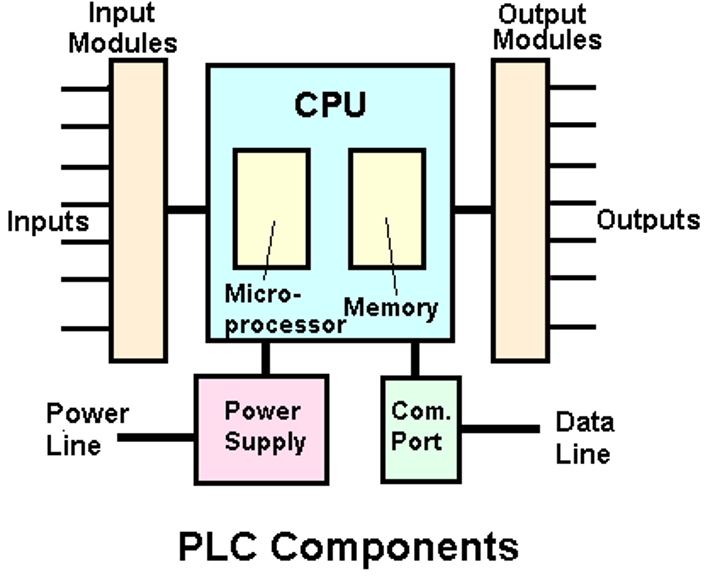
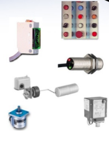
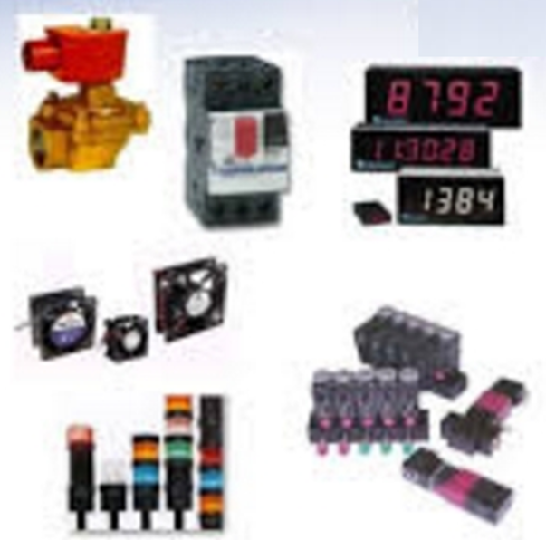
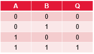
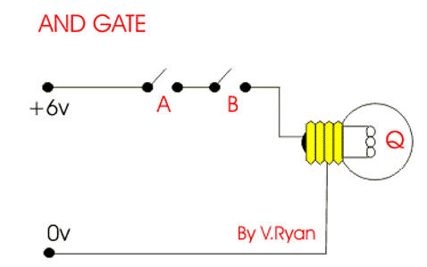

Hello, welcome to Mechatronics Applications Station!
Please find below the Standard Operating Procedure (SOP) for this station
PLCs are similar to a microcontroller
- Microprocessor Based
- Onboard Memory for Storing Programs
- Special Programming Language: Ladder Logic
- I/O ports
The components in a PLC are
- Input Modules: Input Signals can be AC or DC, Analog or Digital
- Output Modules: Outputs are either AC or DC Analog Signals (Although it is possible to 'Construct' Digital Outputs)

Input Modules:
- Switches and Push buttons
- Sensing devices (Digital):
- Limit Switches
- Photoelectric Sensors
- Proximity Sensors
- Condition devices (Analog):
- Temperature Switches
- Pressure Switches
- Level Switches
- Vaccum Switches
- Float Switches
- Encoders

Output Modules:
- Sensing devices (Digital):
- Relays
- Contactors
- Lamps
- Hooter
- Led
- Solenoid Valves
- Coils
- Condition Sensors (Analog):
- Analog Ports
- DC Drives
- Actuators
- Positioner

Gate Logic
- AND Gate Logic

